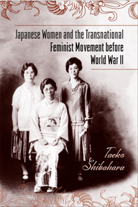

<body bgcolor="#FFFFFF" text="#000000" link="#0000FF" vlink="#CC0000" alink="#CC0000"><center><hr width="350" size="1" align="center" noshade>How collaborations with their American counterparts enabled middle-class, urban Japanese women to promote modernity and gender equality<hr width="350" size="1" align="center" noshade><p><a href="https://cdcshoppingcart.uchicago.edu/Cart/ChicagoBook.aspx?ISBN=9781439910382&&PRESS=temple" target="_top">Buy this book!</a> | <a href="https://cdcshoppingcart.uchicago.edu/Cart/Cart.aspx?PRESS=temple" target="_top">View Cart</a> | <a href="https://cdcshoppingcart.uchicago.edu/Cart/Cart.aspx?PRESS=temple" target="_top">Check Out</a></p><p></p></center><!--none//--><h1>Japanese Women and the Transnational Feminist Movement before World War II</h1>
<h3>Taeko Shibahara</h3>
<P>cloth 1-4399-1038-3 $64.50, Apr 14, <FONT COLOR=#990033>Available</FONT>
<br>Electronic Book 1-4399-1040-5 $64.50 <FONT COLOR=#990033>Available</FONT>
<BR> 222 pp
6x9
5&nbsp;halftones
</P><BLOCKQUOTE><I>"</i>Japanese Women and the Transnational Feminist Movement before World War II<i> makes a significant contribution to the integration of women into modern world history. Showing how Japanese women in peace movements navigated between domestic and international influences, Shibahara explores the transnational space that many women’s organizations inhabited before World War II. Anchored in Japan, the book charts changes over three distinct campaigns over three decades. Shibahara’s findings will interest scholars in world history, peace history, transnational history, women’s history and Japanese history."</i><br>&#151<b>Kathryn Kish Sklar</b>, Distinguished Professor Emerita, State University of New York, Binghamton, and author of <i>Women's Rights Emerges within the Anti-Slavery Movement, 1830-1870: A Brief History with Documents</i></I></BLOCKQUOTE>
<P>This book traces the development of feminist consciousness in Japan from 1871 to 1941. Taeko Shibahara uncovers some fascinating histories as she examines how middle-class women navigated between domestic and international influences to form ideologies and strategies for reform. They negotiated a humanitarian space as Japan expanded its nationalist, militarist, imperialist, and patriarchal power.
<P>Focusing on these women's political awakening and activism, Shibahara shows how Japanese feminists channeled and adapted ideas selected from international movements and from interactions with mainly American social activists.
<P><I>Japanese Women and the Transnational Feminist Movement before World War II</I> also connects the development of international contacts with the particular contributions of Ichikawa Fusae to the suffrage movement, Ishimoto Shidzue to the birth control movement, and Gauntlett Tsune to the peace movement by touching on issues of poverty, prostitution, and temperance. The result provides a window through which to view the Japanese women's rights movement with a broader perspective.
<BR>&nbsp;<h2>Excerpt</h2><P>Excerpt available at <a href="http://www.temple.edu/tempress">www.temple.edu/tempress</a></p>
<BR>&nbsp;<h2>Reviews</h2>
<p><i>"Taeko Shibahara has undertaken painstaking research in Japanese-language and English-language primary sources and archives which have received little attention in the existing scholarly literature. </i>Japanese Women and the Transnational Feminist Movement before World War II<i> provides new and valuable insights into the connections between feminists in Japan and other countries in the first half of the twentieth century."</i> <br>&#151<b>Vera Mackie</b>, Professor of Asian Studies in the Faculty of Law, Humanities and the Arts at the University of Wollongong, and author of <i>Feminism in Modern Japan: Citizenship, Embodiment and Sexuality</i>
<p><i>"Shibahara takes on a painstaking task of combing through archival materials and connecting various 'dots' to reconstruct varied and sometimes surprising ties.... Such historical retracing is invaluable, and Shibahara's culling of various archival materials is priceless.... Shibahara's study provides a welcome opportunity to rethink and reconsider the legacy of the first-wave feminism and possibilities of cross-border collaboration among women of divergent backgrounds, a topic that deserves continuing, expanded attention by historians of women in the United States and elsewhere."</i><br>&#151<b><i>American Historical Review</i></b>
<BR>&nbsp;<h2>Contents</h2><P>
<p>Acknowledgments
<br>Abbreviations
<br>Chronology
<br>
<br>Introduction
<br>
<br>1. Laying the Foundations for an International Feminist Perspective: Challenging the Discourses of Civilization
<br>&nbsp; Women’s Situation in Modernizing Japan
<br>&nbsp; Christian Social Activism and the Notion of the Women’s Rights Movement
<br>&nbsp; Social Questions and Socialist Women
<br>
<br>2. “Carrying with Her New Ideals and a New Outlook”: The Development of Cross-cultural Contacts, 1902–1930
<br>&nbsp; Awakening International Feminist Discourse and the IWSA, 1902–1920
<br>&nbsp; Different Perceptions about Women’s Roles in Society: The IWSA Dialogue with Japanese Educators
<br>&nbsp; Propagating Western Knowledge about Women’s Social Activism in the 1910s
<br>&nbsp; The Problem of Unity in the Women’s Rights Movement in Early 1920s Japan
<br>&nbsp; From Social Reform Work to the Unified Suffrage Movement
<br>&nbsp; The First Pan-Pacific Women’s Conference in Honolulu in 1928
<br>
<br>3. Generating a Feminist Movement through Peace Activism, 1915–1941
<br>&nbsp; No Peace without Equality
<br>&nbsp; The Buildup to the Foundation of the Women’s Peace Association in Japan
<br>&nbsp; In Japanese Women’s Own Image
<br>&nbsp; Women Pacifists in International Politics
<br>&nbsp; Expanding Spaces for Peace Activism
<br>&nbsp; Combining a Nuanced Strategy with a Middle Way
<br>
<br>4. From Private to Public: Ishimoto Shidzue and the Birth Control Movement up to 1941
<br>&nbsp; Ishimoto Shidzue and the Development of Feminist Consciousness
<br>&nbsp; Ishimoto’s Encounter with the Discourse of the Birth Control Movement
<br>&nbsp; From the Private to the Public
<br>&nbsp; Ishimoto Shidzue in America, 1924
<br>&nbsp; Linking Birth Control with Suffrage
<br>&nbsp; Broadening Feminist Consciousness
<br>
<br>5. Using Their Initiative at Home and Beyond: Suffragists’ Wartime Activism, 1931–1941
<br>&nbsp; The Women’s Rights Movement in the Aftermath of the Manchurian Incident <br>&nbsp; Women’s Initiative in Wartime Social Activism during the Second Sino-Japanese War
<br>&nbsp; Writing for Japanese Women
<br>&nbsp; The Gap between American and Japanese Women Widens
<br>&nbsp; The Suspension of Suffragist Activism
<br>
<br>Conclusion
<br>Epilogue: Postwar Continuity
<br>
<br>Appendix A: Notable People
<br>Appendix B: Notable Organizations
<br>Notes
<br>Bibliography
<br>Index
</P><BR>&nbsp;<H2>About the Author(s)</H2>
<P><b>Taeko Shibahara</b> is an independent scholar who teaches part time at Doshisha University and Ryukoku University. She is a co-translator of Ellen Carol DuBois and Lynn Dumenil's <i>Through Women's Eyes: An American History with Documents</i>.</P>
<BR><H2>Subject Categories</H2>
<p><A HREF="/tempress/history.html" TARGET="_top">History</a>
<BR><A HREF="/tempress/women.html" TARGET="_top">Women's Studies</a>
<BR><A HREF="/tempress/asian.html" TARGET="_top">Asian Studies</a>
</p>
<p align="center"><a href="https://cdcshoppingcart.uchicago.edu/Cart/ChicagoBook.aspx?ISBN=9781439910382&&PRESS=temple" target="_top">Buy this book!</a> | <a href="https://cdcshoppingcart.uchicago.edu/Cart/Cart.aspx?PRESS=temple" target="_top">View Cart</a> | <a href="https://cdcshoppingcart.uchicago.edu/Cart/Cart.aspx?PRESS=temple" target="_top">Check Out</a></p><p><font face="Arial" size="1"><a href="copyright.html" onMouseOver="window.status='Web Copyright Policy';return true;" onMouseOut="window.status=''" title="Web Copyright Policy">&copy;</a> 2015 <a href="http://www.temple.edu" target="new" onMouseOver="window.status='Link to Temple University home page';return true;" onMouseOut="window.status=''" title="Link to Temple University home page">Temple University</a>. All Rights Reserved. http://www.temple.edu/tempress/titles/2276_reg.html</font></p>